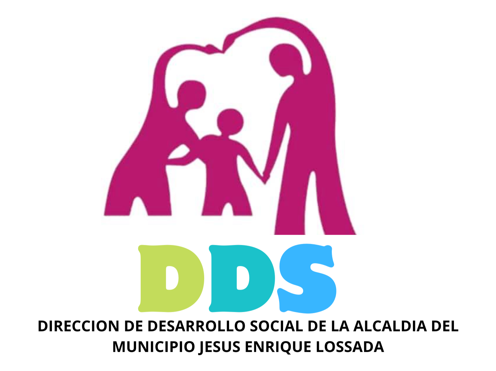

Gestión 2025
Informe de Gestión 2025
Resumen detallado de las actividades, logros y ejecución presupuestaria correspondiente al año fiscal 2025.
Leer másAccede a los informes detallados de nuestra gestión y transparencia administrativa.
Resumen detallado de las actividades, logros y ejecución presupuestaria correspondiente al año fiscal 2025.
Leer más